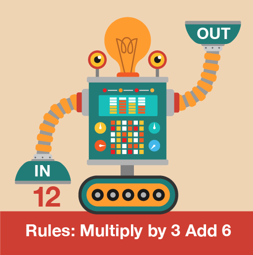
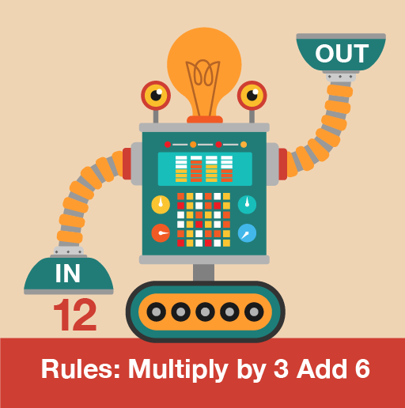

7.3 함수 (function)

 

Figure 7.8: 함수
- 함수: 특정한 목적을 위한 연산을 수행하기 위해 명명된 일련의 문장(추상화)
- 예:
sum(x)\(\rightarrow\) 벡터x의 값을 모두 합산하는 함수로 “sum” 이라고 명명된 내장 함수 - R 콘솔에서 함수 명칭(예:
sum)을 입력 후 실행하면 함수 내부 확인 가능
- 예:
sumfunction (..., na.rm = FALSE) .Primitive("sum")- 함수의 명칭(위의 예에서
sum)으로 특정 합수를 호출(call)
R의 스크립트는 내장된 혹은 사용자가 정의한 함수들을 호출함으로써 작성됨
함수를 사용해야만 하는 이유
- 매우 큰 프로그램 작업을 해야할 경우 함수를 통해 작업 단위 별로 분할 가능
- 한 번 작성한 함수는 재사용 가능
- 프로그램의 체계적 관리가 가능하기 때문에 유지 및 보수가 용이
- 프로그램 코드의 간결화
7.3.1 함수의 정의
function이라는 R의 예약어를 통해 사용자 함수 정의- 함수 정의 시 함수의 명칭을 반드시 부여해야 함
함수 이름 <- function()
- 함수는 일반적으로 인수(argument)로 입력값을 전달 받으면 그 결과값을 반환(return)
- 함수의 인수와 반환에 따라 다음과 같이 4 가지 유형의 함수 정의 가능
- 인수를 갖는 함수
- 인수를 갖지 않는 함수
- 값을 반환하는 함수
- 값을 반환하지 않는 함수
# (1) 인수를 갖는 함수
## (모)분산을 계산하는 함수
var_pop <- function(x) {
n <- length(x)
if (n < 2) {
stop("적어도 두 개 이상의 관찰값이 존재해야 합니다")
}
mx <- mean(x)
v <- sum((x - mx)^2)/n
return(v) # 결과를 반환하는 함수: v를 함수의 출력값으로 설정
}
## test
set.seed(1) # 동일한 난수 생성을 위해 seed 번호 부여
x <- rnorm(1)
var_pop(x)Error in var_pop(x): 적어도 두 개 이상의 관찰값이 존재해야 합니다set.seed(1000)
x <- rnorm(1000, 2, 4) # 평균이 2이고 표준편차가 4인 정규분포로부터 1000개 난수 추출
var_pop(x)[1] 15.40581# (2) 인수를 갖지 않는 함수
print_lyrics_let_it_be <- function() {
print("When I find myself in times of trouble, ")
print("Mother Mary comes to me.")
print("Speaking words of wisdom 'let it be'.")
}
print_lyrics_let_it_be()[1] "When I find myself in times of trouble, "
[1] "Mother Mary comes to me."
[1] "Speaking words of wisdom 'let it be'."print_lyrics_let_it_be(beatles)Error in print_lyrics_let_it_be(beatles): 사용되지 않은 인자 (beatles)## 주사위를 돌리는 함수
rolling_dice <- function() {
sample(1:6, 1, replace = TRUE)
}
rolling_dice(); rolling_dice(); rolling_dice(); [1] 4[1] 4[1] 4# (3) 값을 반환하는 함수
manual_mean <- function(x) {
n <- length(x)
sumi <- 0
for (i in 1:n) {
sumi <- sumi + x[i]
}
return(sumi/n)
}
set.seed(20)
x <- sample(1:200, 20, replace = FALSE) # 1 ~ 200 중 랜덤하게 20개 추출(비복원)
manual_mean(x)[1] 107# 미리 정의하지 않은 인수를 입력한 경우
set.seed(4)
na_idx <- sample(1:length(x), 4)
x[na_idx] <- NA
manual_mean(x, na.rm = TRUE)Error in manual_mean(x, na.rm = TRUE): 사용되지 않은 인자 (na.rm = TRUE)# (4) 값을 반환하지 않는 함수(void function)
summary_mean <- function(x, ...) {
n <- sum(!is.na(x))
mx <- sum(x, ...)/n
cat("Data: ", sprintf("%.2f", x), "\n") # 소숫점 2째 짜리 까지 출력
cat("전체 관찰값 개수(결측 제외) = ", n, "\n")
cat("산술평균 = ", mx, "\n")
}
set.seed(20)
x <- rnorm(20)
summary_mean(x)Data: 1.16 -0.59 1.79 -1.33 -0.45 0.57 -2.89 -0.87 -0.46 -0.56 -0.02 -0.15 -0.63 1.32 -1.52 -0.44 0.97 0.03 -0.09 0.39
전체 관찰값 개수(결측 제외) = 20
산술평균 = -0.1877639 result <- summary_mean(x)Data: 1.16 -0.59 1.79 -1.33 -0.45 0.57 -2.89 -0.87 -0.46 -0.56 -0.02 -0.15 -0.63 1.32 -1.52 -0.44 0.97 0.03 -0.09 0.39
전체 관찰값 개수(결측 제외) = 20
산술평균 = -0.1877639 result NULLx[na_idx] <- NA
# ...를 통해 미리 정하지 않은 인수를
# 함수 내부에서 호출한 다른 함수로 전달 가능
summary_mean(x, na.rm = TRUE) Data: 1.16 -0.59 NA -1.33 -0.45 0.57 NA -0.87 -0.46 -0.56 NA -0.15 -0.63 1.32 -1.52 -0.44 0.97 0.03 NA 0.39
전체 관찰값 개수(결측 제외) = 16
산술평균 = -0.1590692 x <- summary_mean(x, na.rm = TRUE)Data: 1.16 -0.59 NA -1.33 -0.45 0.57 NA -0.87 -0.46 -0.56 NA -0.15 -0.63 1.32 -1.52 -0.44 0.97 0.03 NA 0.39
전체 관찰값 개수(결측 제외) = 16
산술평균 = -0.1590692 7.3.2 함수의 인수 전달 방법
- 함수는 입력값(input) 을 가지며, 이러한 입력값은 함수의 인수(argument)에 해당 값을 할당함으로써 입력값이 함수로 전달됨
- 함수의 인수 정의는 내 마음대로 가능(개수 무관)
- R에서 함수 호출 시 인수 전달은 “값”을 호출 하는 방식(call by value)
call by value와 상반되는 개념으로 참조에 의한 호출(call by reference)로 값이 아니라 값이 저장되어 있는 메모리의 주소 값을 전달하는 방식(대표적인 예: C 언어의 포인터)임. 계산 효율은 참조에 의한 호출이 월등히 뛰어나지만, 프로그램의 구조가 복잡하다는 단점을 가짐. R은 데이터 분석에 특화된 프로그램이기 때문에 직관적인 call by value 방식을 택함.
- 예시
# 두 변수의 값을 바꾸는 함수: swap
swap <- function(x, y) {
temp <- x
x <- y
y <- temp
cat("두 값이 바뀌었습니다.", sprintf("x = %d, y = %d", x, y) ,"\n")
}
x <- 3; y <- 10
swap(x, y)두 값이 바뀌었습니다. x = 10, y = 3 x; y # x, y 두 값이 바뀌지 않음[1] 3[1] 10- 인수를 전달하는 방법은 다음 두 가지임
- 인수의 위치 순서에 의한 전달: 정의한 인수의 순서대로 각 인수에 대응하는 값을 전달
- 인수의 이름에 의한 전달: 위치와 관계 없이 정의한 인수의 이름을 지정하여 값을 전달
# 표준편차 계산 함수: stdev
stdev <- function(x, na.rm = TRUE) {
if (is.matrix(x)) apply(x, 2, sd, na.rm = na.rm)
else if (is.vector(x)) sqrt(var(x, na.rm = na.rm))
else if (is.data.frame(x)) sapply(x, sd, na.rm = na.rm)
else sqrt(var(as.vector(x), na.rm = na.rm))
}
set.seed(1000)
X <- matrix(rnorm(1000), 100, 10)
x <- rpois(50, lambda = 10) # 포아송 분포(lambda = 10)에서 50개 난수 추출
dat <- mtcars # R 내장 데이터를 dat 에 저장
# (1) 순서에 의한 전달
stdev(X, T); stdev(X) # 동일한 결과 [1] 1.0065940 0.9033927 0.9727257 0.9905631 0.8202803 1.0114516 0.9855547
[8] 1.0211373 1.0716219 1.0426811 [1] 1.0065940 0.9033927 0.9727257 0.9905631 0.8202803 1.0114516 0.9855547
[8] 1.0211373 1.0716219 1.0426811stdev(x)[1] 3.41569stdev(dat) mpg cyl disp hp drat wt
6.0269481 1.7859216 123.9386938 68.5628685 0.5346787 0.9784574
qsec vs am gear carb
1.7869432 0.5040161 0.4989909 0.7378041 1.6152000 stdev(TRUE, dat) # 오류 why??Warning in if (na.rm) "na.or.complete" else "everything": length > 1 이라는 조건
이 있고, 첫번째 요소만이 사용될 것입니다Error in if (na.rm) "na.or.complete" else "everything": argument is not interpretable as logical# (2) 이름에 의한 전달
set.seed(5)
na_idx <- sample(1:50, 5)
x[na_idx] <- NA
stdev(na.rm = T, x = x)[1] 3.411211stdev(dat = dat, na.rm = TRUE) # 오류 why???Error in stdev(dat = dat, na.rm = TRUE): 사용되지 않은 인자 (dat = dat)7.3.3 함수의 기본 구성 요소

Figure 7.9: 함수의 기본 구조
function()에서()안의 부분(일반적으로 첫 번째 줄)을 머리(header) 부분- 함수의 초기 형태(매개변수 또는 인수의 형태)를 지정
- 연산 또는 명령이 수행되는 부분은 함수의 몸통(body) 부분(
{}로 표시)- 함수 내부에서 실행되는 연산 명령어들의 집합으로 구성
- 인수(argument): 함수의 기능을 선택적으로 조정하는 parameter로 함수 안에서 작동하는 매개변수들을 통칭
- 인수는
argument또는argument = default value로 설정 - 복수의 인수는 콤마(
,)로 구분 \(\rightarrow\)fun_name <- function(arg1, arg2, arg3) - 특수 인수
...: 어떠한 개수의 인수를 함수로 전달할 수 있음- 일반적으로 인수의 개수가 불특정하거나 함수 안에서 다른 함수를 호출할 때 특정 인수를 다른 함수로 전달시킬 때 유용(위 예시 참고)
- 인수는
# (1) 인수에 default 값을 주지 않은 함수
fun_without_arg_default <- function(x, y) {
x*y
}
set.seed(10)
a <- sample(1:20, 10, replace = TRUE) # 복원 추출
a[7] <- NA
b <- 5
fun_without_arg_default(a, b) [1] 55 45 50 80 60 40 NA 95 75 75# (2) 인수에 default 값을 부여한 함수
fun_with_arg_default <- function(x = 5, y = 8) {
x*y
}
fun_with_arg_default()[1] 40trim_mean <- function(x, trim = 0, na.rm = F) {
mean(x, trim = trim, na.rm = na.rm)
}
trim_mean(a)[1] NAtrim_mean(x = a, trim = 0.2, na.rm = TRUE) # 인수 이름으로 값 전달[1] 12.57143trim_mean(a, 0.3, TRUE) # 인수 순서대로 값 전달[1] 12.6# (3) ... 인수 사용 예제
# list() 함수를 이용해 `...`에 해당하는 인수들을 리스트 객체로 만든 후
# 이를 함수에서 사용
dot_example <- function(x, ...) {
# browser()
trim <- 0
na.rm <- FALSE
dots <- list(...) # ...에 해당하는 인수 추출
for (arg in names(dots)) {
if (arg == "trim") trim <- as.numeric(dots[arg])
if (arg == "na.rm") na.rm <- as.logical(dots[arg])
}
mean(x, trim = trim, na.rm = na.rm)
}
dot_example(a)[1] NAset.seed(30)
a <- sample(1:30, 15, replace = TRUE) # 복원 추출
dot_example(a)[1] 17.06667a[9] <- NA
dot_example(a)[1] NAdot_example(a, trim = 0.1, na.rm = TRUE)[1] 17.75# (4) `...` 인수가 함수 내 사용(호출)된
# 다른 함수의 인수로 전달하는 경우
# summary_mean() 함수 예제와 유사
mean_manual <- function(x, ...) {
mean(x, ...)
}
set.seed(30)
x <- rnorm(30, mean = 10, sd = 5)
na_idx <- sample(1:30, 3, replace = TRUE)
xna <- x; xna[na_idx] <- NA
mean_manual(x)[1] 8.347683mean_manual(xna)[1] NAmean_manual(xna, na.rm = TRUE)[1] 8.127862mean_manual(x = xna, trim = 0.2, na.rm = TRUE)[1] 7.534424
함수 몸체 안에
browser()을 입력하면, browser() 전 까지 함수 몸체 안 명령들이 수행되고, 이후 명령들이 어떻게 실행되는지 확인할 수 있음. 함수 작성 시 함수 로직을 세우고 디버깅 할 때 매우 유용하게 사용
인수 관련 몇 가지 유용한 함수들
args(): 특정 함수에서 사용되는 인수 확인
args(fun_without_arg_default)function (x, y)
NULLargs(rnorm)function (n, mean = 0, sd = 1)
NULLbody(): 함수의 몸체 조회
body(var_pop){
n <- length(x)
if (n < 2) {
stop("적어도 두 개 이상의 관찰값이 존재해야 합니다")
}
mx <- mean(x)
v <- sum((x - mx)^2)/n
return(v)
}body(dot_example){
trim <- 0
na.rm <- FALSE
dots <- list(...)
for (arg in names(dots)) {
if (arg == "trim")
trim <- as.numeric(dots[arg])
if (arg == "na.rm")
na.rm <- as.logical(dots[arg])
}
mean(x, trim = trim, na.rm = na.rm)
}match.arg(): 인수를 매치하는 함수로 매치할 대상의 인수를 지정- arg: 매치할 대상 인수 지정
- choice: 매치될 인수값 목록
- several.ok: 복수 선택 여부(
TRUE/FALSE)
# 인수의 매치
match.arg(arg = c("med", "max"),
choices = c("mean", "median", "iqr", "minimum", "maximum", "range"),
several.ok = TRUE)[1] "median" "maximum"match.arg(arg = c("median", "maximuum"),
choices = c("mean", "med", "iqr", "minimum", "max", "range"),
several.ok = TRUE) # 오류 why??Error in match.arg(arg = c("median", "maximuum"), choices = c("mean", : 'arg'은 반드시 "mean", "med", "iqr", "minimum", "max", "range" 중 하나이어야 합니다match.arg(arg = c("med", "max"),
choices = c("mean", "median", "iqr", "minimum", "maximum", "range"),
several.ok = FALSE)Error in match.arg(arg = c("med", "max"), choices = c("mean", "median", : 'arg'는 반드시 길이가 1이어야 합니다# match.arg() 함수 응용
# 중심값 관련 통계량 계산 함수
# 평균(mean), 절삭평균(trimmed mean), 중앙값(median), 최빈수(mode) 계산
# pkg_list <- rownames(installed.packages()) # 설치된 패키지 목록
# if (!("DescTools" %in% pkg_list))
# install.packages("DescTools") # 최빈수를 구하기 위한 패키지 설치
center <- function(x,
type = c("mean", "trimmed", "median", "mode"),
...
)
{
# browser()
trim = 0; na.rm = FALSE # dot 인수 초기값
type <- match.arg(type)
dots <- list(...)
for (arg in names(dots)) {
if (arg == "trim") trim <- as.numeric(dots[arg])
if (arg == "na.rm") na.rm <- as.logical(dots[arg])
}
switch(type,
mean = mean(x, na.rm = na.rm),
trimmed = mean(x, trim = trim, na.rm = na.rm),
median = median(x, na.rm = na.rm),
mode = DescTools::Mode(round(x, 1), na.rm = na.rm)
# DescTools 패키지 내 Mode 함수를
# workspace에 불러오지 않고 사용
)
}
set.seed(100)
x <- rchisq(100, df = 3) # 자유도가 3인 카이제곱분포에서 난수 추출
xna <- x; xna[na_idx] <- NA
center(x, "mean"); center(x, "me")[1] 2.929673Error in match.arg(type): 'arg'은 반드시 "mean", "trimmed", "median", "mode" 중 하나이어야 합니다[1] 2.929673center(x, "trimmed", trim = 0.1)[1] 2.565866center(x, "median")[1] 2.45614center(x, "mode")[1] 1.7
attr(,"freq")
[1] 6center(xna, "median")[1] NAcenter(xna, "median", na.rm = TRUE)[1] 2.423723switch() 함수는 ifelse() 함수의 확장 버전으로 \(n\) 개의 조건에 대한 분기 가능
함수 제어 관련 주요 함수
return(): 계산된 결과를 반환하는 함수로 함수의 흐름에서return()이 나타나면 결과값을 반환하고 함수 종료- 강제 종료가 필요한 경우 응용 가능
# (1) 객체 반환
set.seed(100)
x <- rnorm(100, mean = 24, sd = 2.2)
value_return1 <- function(x) {
tot <- sum(x)
n <- length(x)
result <- list(size = n, total = tot, average = mean(x), stdev = sd(x))
return(result)
}
value_return1(x)$size
[1] 100
$total
[1] 2400.641
$average
[1] 24.00641
$stdev
[1] 2.245563desc <- value_return1(x)
desc$stdev[1] 2.245563value_return2 <- function(x) {
return(sum(x)/length(x))
}
value_return2(x)[1] 24.00641# (2) 강제 종료 시 활용
value_return3 <- function(x) {
if (anyNA(x)) return
return(sum(x)/length(x))
}
xna <- x; xna[na_idx] <- NA
value_return3(xna)[1] NAvalue_return3(x)[1] 24.00641stop(): 예외처리 함수의 일종으로 특정 조건일 경우 (오류) 메세지를 출력하고 함수 종료- 인수로 문자열을 가짐
# (1) stop() 함수 사용
# 복소수 값을 실수와 허수로 분할
split_complex <- function(z) {
if(!is.complex(z))
stop("입력값이 복소수가 아닙니다")
re <- Re(z)
im <- Im(z)
return(list(real = re, imaginary = im))
}
split_complex(pi)Error in split_complex(pi): 입력값이 복소수가 아닙니다split_complex(23 + 7i)$real
[1] 23
$imaginary
[1] 77.3.4 함수의 적용 범위(scoping rule)
Scoping rule: 변수 또는 객체가 어디에서 사용 가능한지를 결정하는 규칙
- 매개변수(parameter): 함수를 적용할 때 사용되는 변수로 인수로부터 발생함
- 함수의 인수 리스트에서 인수값이 매개변수로 할당
- 지역변수(local variable): 함수의 몸체 부분에서 정의된 변수들을 지칭하며 함수의 종료와 동시에 재사용 불가
- 전역변수(global variable): 함수의 외부(workspace)에서 정의된 변수로 함수 내부에서 값을 할당하지 않더라도 사용 가능
# (1) 매개변수, 지역변수, 전역변수 구분
x <- 10 # 전역변수
y <- 5 # 전역변수
scope1 <- function(x) {
y <- x^2
print(x) # 매개변수
print(y) # 지역변수
}
x; y # 전역변수가 출력[1] 10[1] 5scope1(x = 10)[1] 10
[1] 100
- 작업공간에서
x와y는 각각 10, 5 값이 할당- 작업공간 상에서
xy값은 변하지 않음- 지역변수
y의 사용 범위는 함수 몸체이기 때문에 함수 밖에 있는 y는 값이 변하지 않음
x <- 10 # 전역변수
y <- 5 # 전역변수
rm(z)
scope2 <- function(x) {
y <- x^2
print(x) # 매개변수
print(y) # 지역변수
print(z)
}
scope2(x = 5)[1] 5
[1] 25Error in print(z): 객체 'z'를 찾을 수 없습니다z <- 13 # 전역변수로 z 할당
scope2(x = 5)[1] 5
[1] 25
[1] 13
- 함수 외부와 내부 모두에서
z가 정의되지 않았기 때문에 에러 출력- 작업공간 상에
z를 정의한 경우 함수 내부에서 workspace에서 정의한z를 그대로 사용 \(\rightarrow\) 함수 외부와 내부 자유로이 사용 가능한 변수를 자유변수(free variable)이라고 지칭함.
지역변수의 사용 범위는 함수 몸체 안이지만 그 범위를 밖으로 확장할 수 있음 \(\rightarrow\) <<- 또는 ->> 사용
# 지경변수의 확장 예제
x <- 1; y <- 2; z <- 3; k <- 10
scope3 <- function(x) {
y <<- x + 10
y * 3 ->> z
print(x) # 매개변수
print(y) # 지역변수
print(z) # 지역변수
print(k) # 자유변수
}
x;y;z;k[1] 1[1] 2[1] 3[1] 10scope3(x = 2)[1] 2
[1] 12
[1] 36
[1] 10x;y;z;k[1] 1[1] 12[1] 36[1] 10하나의 함수 내부에 또 다른 함수 생성 가능
mean_manual2 <- function(x) {
tot <- sum(x)
size <- function(x) {
return(length(x))
}
return(tot/size(x))
}
mean_manual2(1:10)[1] 5.5